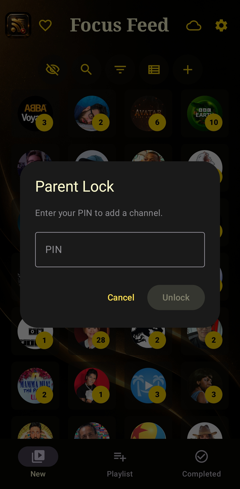
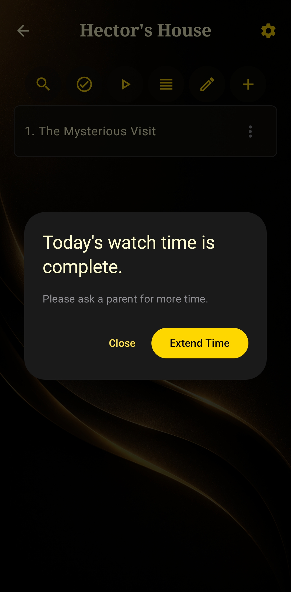
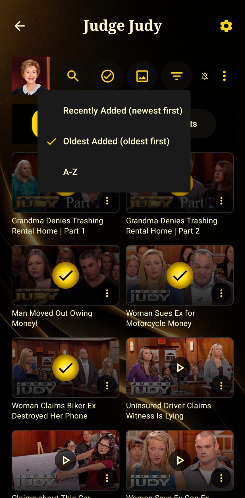
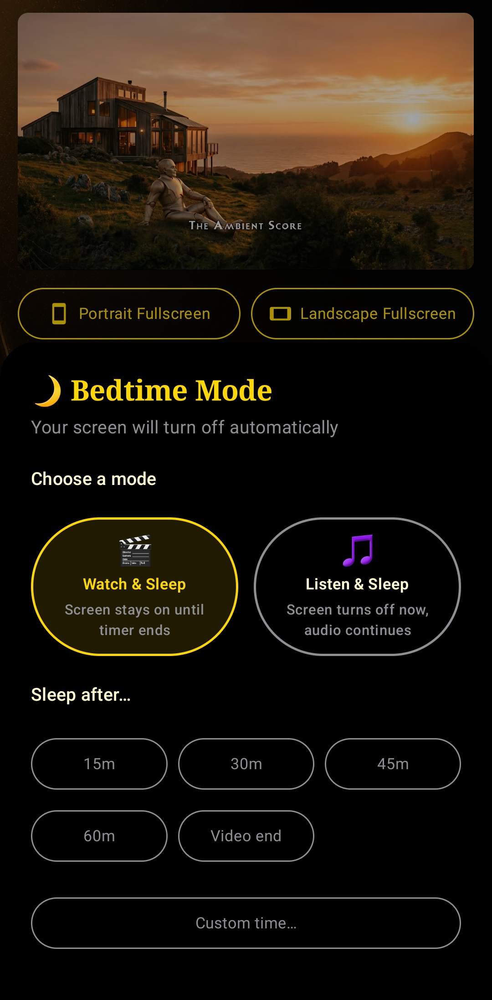
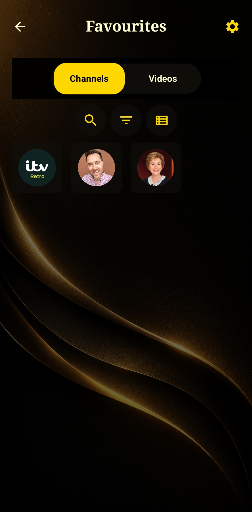
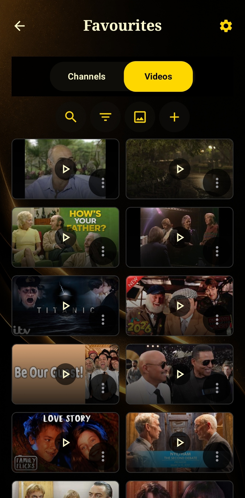
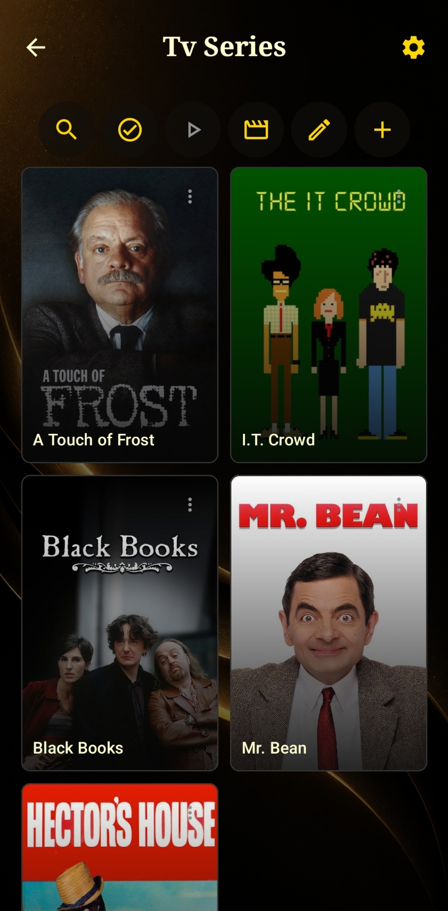
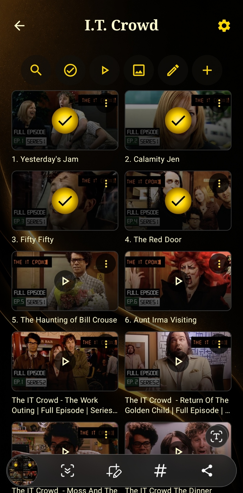
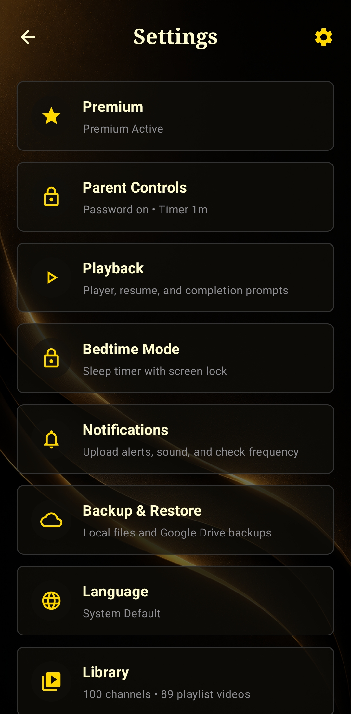

Focus Feed
Watch what you chose to watch. Nothing else.
Focus Feed follows your favourite YouTube channels through their own open feeds — no algorithm deciding what's next, no autoplay dragging you sideways, no recommended rabbit holes. Just the channels you follow, in the order they posted.
Your channels, your list, your call
No recommendation engine, no autoplay, no "up next." Every channel you follow sits in its own tile, with a gold badge showing exactly how many new videos are waiting — nothing more. Tap in when you're ready, on your own terms.

Follow any channel, instantly
Paste a YouTube channel link and Focus Feed detects the name automatically. Built on open RSS feeds rather than a locked-down API — no sign-in, no tracking, no ads deciding what surfaces. You pick the channel, Focus Feed shows you what they've posted, nothing more.

Know what your kids are watching
Set a PIN so adding a new channel or video needs your say-so, and put a Daily Watch Timer in place — once it's up, they'll need to ask you before watching more. Built for peace of mind, not just for parents.



Watch it your way, not YouTube's way
Inside any channel, Videos and Shorts live in their own tabs — a clean chronological grid, watched videos marked with a checkmark, no autoplay pulling you from one to the next.


Let some things through, not others
Set keywords per channel — only new videos whose title matches one of them make it into that channel's feed. What matters to you stays lit up; what doesn't never reaches you.

Start at the beginning, every time
Sort any channel Recently Added, Oldest Added, or A-Z, and track what you've watched with a simple tick. It's the best way to actually enjoy a channel start to finish — not just whatever the algorithm decided to serve you first.

Watch & Sleep, or Listen & Sleep
Set a cut-off and the app locks itself down for the night — video keeps playing quietly in the background if you choose Listen & Sleep, or the screen turns off cleanly at your chosen time. No scrolling into 2am by accident.

Keep watching, keep moving
Shrink the video into a floating window and carry on with your day — reply to a message, check your list, switch apps. The channel you're watching stays with you, quietly, in the corner.
Save what matters, not everything
Favourite whole channels or individual videos in their own dedicated tabs — so the things you actually love don't get buried in a feed of everything else you follow.


Build your own folders, your own way
Create custom playlists — Movies, Relax/Sleep, TV Series, whatever you like — and drop videos or channels into them. Add a full YouTube playlist link at once for faster saves, and mark episodes complete as you work through a series.



Settings that respect your time
Backup & Restore to Google Drive so your library's never at risk, notification controls for upload alerts and check frequency, and a library that scales with you — no limits hiding behind the free tier once you've gone Unlimited.

Cheapest and best, on purpose
No trial gimmicks, no ads, no upsell games. Follow two channels free forever — pay only if you want more.
- Follow up to 2 channels
- No algorithm, no autoplay
- No account required
- Unlimited channels
- Bedtime Mode
- Picture-in-Picture
- Keyword filtering